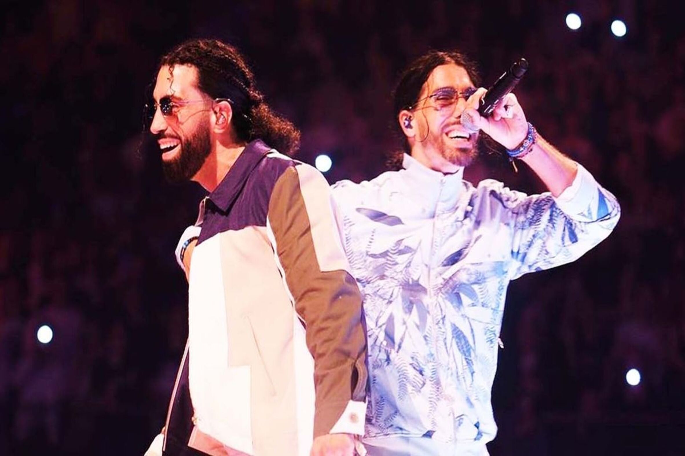

13 OCTOBRE 2026 / RECORD
Deux Frères, un album entièrement diamant.
Les 16 titres originaux de l'album sont désormais certifiés singles de diamant. Un record historique pour le duo, plus de sept ans après sa sortie.
Lire l'article ↗PNL / ACTUALITÉS
Retrouvez les dernières nouvelles du duo, ses records et son actualité musicale.
13 OCTOBRE 2026 / RECORD
Les 16 titres originaux de l'album sont désormais certifiés singles de diamant. Un record historique pour le duo, plus de sept ans après sa sortie.
Lire l'article ↗
05 NOVEMBRE 2026
Une anecdote de Philippe Katerine relance les spéculations autour du duo. Aucun nouvel album n'est confirmé.
Lire l'article ↗
OCTOBRE 2026
Celsius devient le dernier morceau de la version originale de Deux Frères à obtenir cette distinction.
Lire l'article ↗
16 SEPTEMBRE 2026
Dix ans après sa sortie, Dans la légende reste l'un des projets emblématiques du rap français.
Redécouvrir l'album ↗QUE LA FAMILLE
Aucun nouvel album officiellement annoncé. L'histoire reste à écrire.